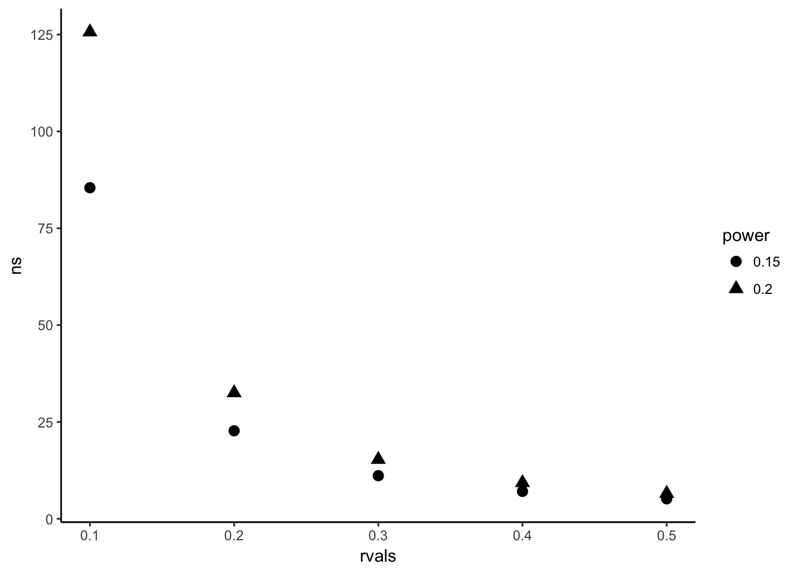
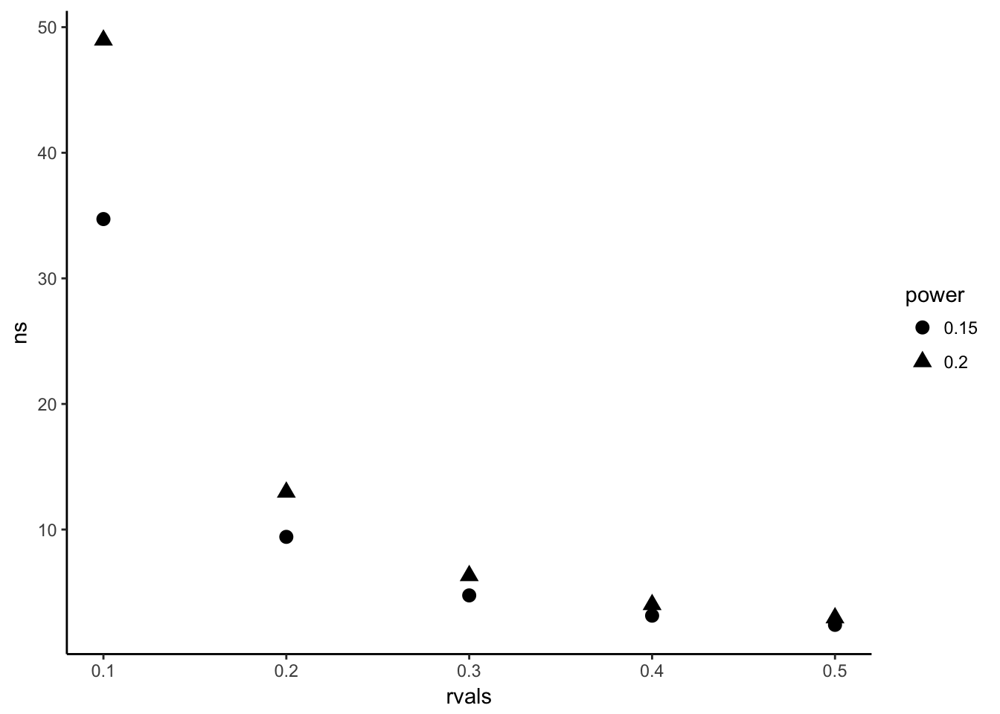

How many samples to take of a population to guarantee a useful result? A time honored question with no ‘real’ answer. But some things can be done to maximize success!
First, a short discussion on a priori power analysis.
“Power analysis is an important aspect of experimental design. It allows us to determine the sample size required to detect an effect of a given size with a given degree of confidence. Conversely, it allows us to determine the probability of detecting an effect of a given size with a given level of confidence, under sample size constraints. If the probability is unacceptably low, we would be wise to alter or abandon the experiment.
The following four quantities have an intimate relationship:
This gives us the ‘power’ to estimate sample size given pre-determined tolerances for type I and II errors, with a simple estimation of the effect size. How do we estimate the effect sizes? As stated above, it has to be an informed, conservative guess.
This also demands a discussion of the merits of controlling for type I vs type II error. There is an ongoing debate on this topic in climate change research. In short, some argue that we are too cautious with type II error, allowing for false negatives far more than false positives. This relates to many things including politics of course, but I’ll stop here and give one citation that elucidates the discussion nicely. Find it here.
Say I want to know the effect of a night out on the town on how many minutes after 9 someone shows up to work. I’ll measure minutes after 12 pm they get home, and minutes after 9 they show up to work. My null hypothesis is that staying out has no relatioship to the time people show up to work. I estimate that every 60 minutes past 12 someone is out leads to 15 minutes of tardyness. Is this a small or large effect size? The standard seems to have been set by Cohen 1988, where recommendations are summarised for detecting differences between groups for many types of analyses. A summary is available online here.
Generally scientists have settled on accepting 5% type I error rates. Type II error is much less discussed, commonly 20% error rates are used for conservative estimates.
library(pwr)
#need to select appropriate function for your design. I'm just going to measure everyone in my hallway, so there's no grouping, and I'll use a correlation test
##pwr.r.test(n = , r = , sig.level = , power = )
ns<-NULL
test<-NULL
rvals<-c(0.1, 0.2, 0.3, 0.4, 0.5)
pow<-c(0.2, 0.15)
for(j in pow){
for(i in rvals){
test<-pwr.r.test(r=i, sig.level = 0.05, power=j)
#solving for n so it is not provided.
##r is an estimated correlation coefficient (analagous to effect size. )
ns<-c(ns, test$n)
}
}
library(ggplot2)
ns<-as.data.frame(ns);ns$rvals<-c(rvals,rvals)
ns$power<-c(rep("0.2", 5), rep("0.15", 5))
ggplot(data=ns, aes(y=ns, x=rvals,shape = power))+geom_point(size = 3)+theme_classic()
#Maybe I want to solve for n to test from groups that represent grad stuedents years 1-5 of grad school
ns<-NULL
test<-NULL
rvals<-c(0.1, 0.2, 0.3, 0.4, 0.5)
pow<-c(0.2, 0.15)
for(j in pow)
for(i in rvals){
test<-pwr.anova.test(k = 5, f =i , sig.level = 0.05, power =j )
#solving for n so it is not provided.
##r is an estimated correlation coefficient (analagous to effect size. )
ns<-c(ns, test$n)
}
ns<-as.data.frame(ns);ns$rvals<-c(rvals,rvals)
ns$power<-c(rep("0.2", 5), rep("0.15", 5))
ggplot(data=ns, aes(y=ns, x=rvals,shape = power))+geom_point(size = 3)+theme_classic()